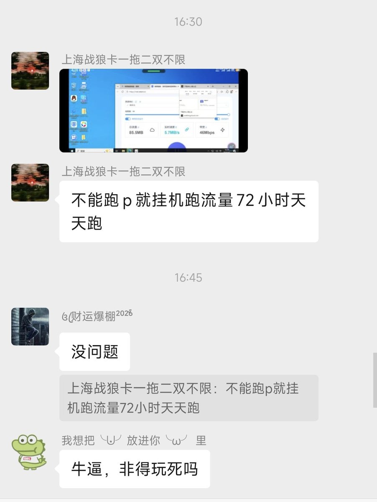
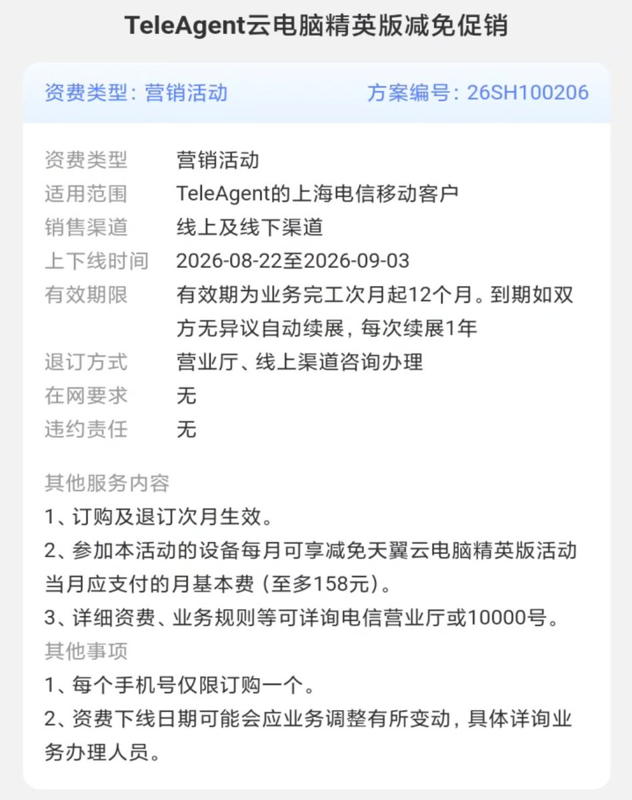
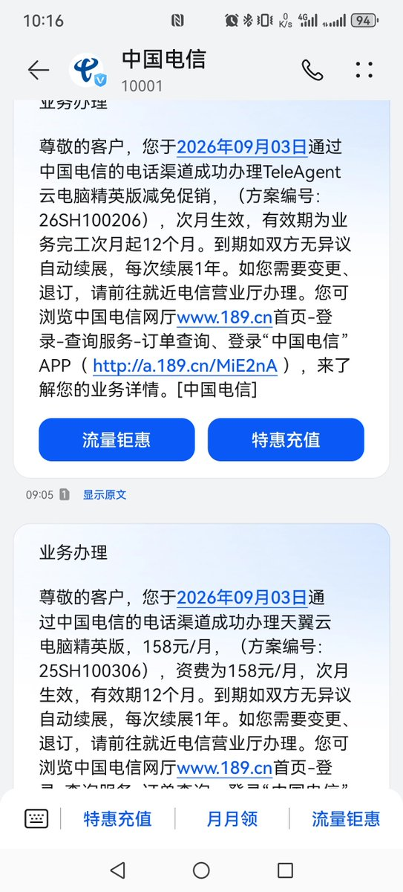

上海电信这个0元云电脑，除了投诉没通知就下架的，还有跑pcdn的
上传4M也就每秒几百k，跑p一天能有几个钱？估计就是想让大伙儿都玩不成，还有炫耀的成分，跟刷流量的差不多
这种人占了便宜就觉得赚，占不到便宜就觉得亏😅😅😅

上传4M也就每秒几百k，跑p一天能有几个钱？估计就是想让大伙儿都玩不成，还有炫耀的成分，跟刷流量的差不多
这种人占了便宜就觉得赚，占不到便宜就觉得亏😅😅😅



这种0元云电脑跟风上了就上了，没上就没那运气，要真的需要可以跑线下直接办
不少卡友撸云电脑撸魔怔了，投诉上海电信。现在业务都下架了，贴吧开始组团投诉，让他上架
没有提前公示30天，确实有可能杠到，就看上电头铁不铁了。不过上海电信连夜改26SH100206条款，图3最后一条声明了，有这个可以免责 https://t.co/BM7r4f9eC3 https://t.co/9Umdsddl4j
不少卡友撸云电脑撸魔怔了，投诉上海电信。现在业务都下架了，贴吧开始组团投诉，让他上架
没有提前公示30天，确实有可能杠到，就看上电头铁不铁了。不过上海电信连夜改26SH100206条款，图3最后一条声明了，有这个可以免责 https://t.co/BM7r4f9eC3 https://t.co/9Umdsddl4j